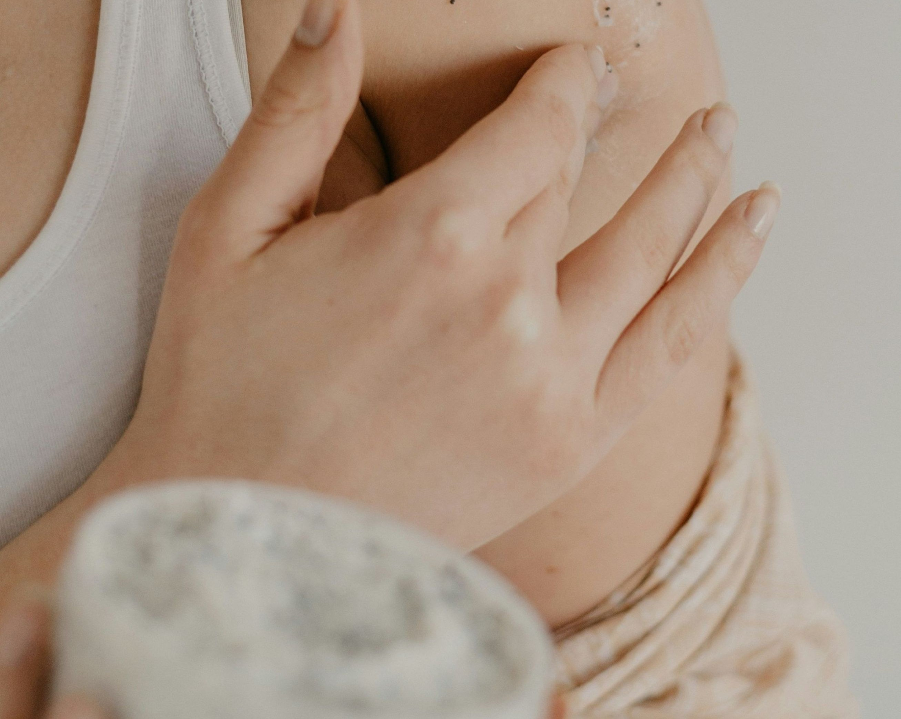

事業内容
Service
DESIGN
デザイン考案
自分を表現する方法のひとつであるタトゥー。デザインは無限大であり、 世界には様々なデザインがあります。私たちはあなたの世界観、想い、表現したいものを 丁寧にヒアリングし、納得のいくデザインを一緒に考案します。

OPARATION
施術
一緒に考えたデザインを実際に体に掘っていきます。
２時間で終わる場合もあれば、大きさによっては数日かけて完成させる場合もあります。

OPERATION
アフターケア
タトゥーを掘った後のアフターケアは、その後のタトゥー生活を大きく左右するものです。 正しいケアをしないと、色がにじんでしまったり、デザインがつぶれてしまうことがあります。 正しいアフターケアであなたのタトゥー人生を豊かなものにします。
